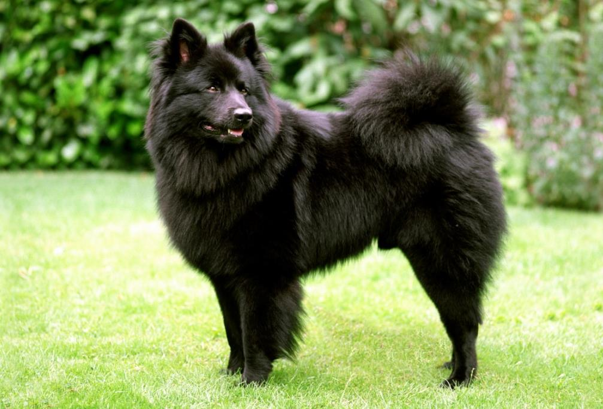

Очень редкая порода, самая крупная в семействе Немецких шпицев (разные стандарты определяют ее либо как отдельную, либо как подвид Немецкого шпица). Вырастают Гроссшпицы до 45 см. Кинологи считают, что эти собаки появились раньше других псов из группы. Разводили их на севере Германии, в Англии и Франции как пастушьих.

Как и все Шпицы, Гросс – квадратная пушистая лисичка с длинной шерстью рыжего, коричневого или черного окраса, пушистыми очесами на груди, теле, хвосте.
Животные очень смышленые, но непослушные. Они не умеют долго концентрироваться и сидеть спокойно, им нужно постоянно двигаться. Порода отличается покладистым характером, песики ладят с детьми, но не любят посторонних, могут служить охранниками.